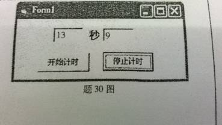

单选
为了使列表框中的项目呈多列显示，需要设置的属性为 ( )
Columns
设a=4，b=5，c=6，执行语句Print
a＜b And
b＜c，窗体上显示的是
（ ）
B. True
下列叙述中错误的是（ ）
C.窗体或控件的事件的名称可以由编程人员确定
设a=“我喜欢Visual
Basic编程。”，下列使b=“Visual
Basic”的语句是
（ ）
D. b=Mid（a，4，12）
5.确定一个控件在窗体上的位置的属性是
（ ）
D. Top和Left
6.要把窗体Forml加载到内存但不显示出来，可使用的语句是
（ ）
C. Load Forml
7.执行语句Print Fomat（1234.567，“##，##
D.1,234.57
设x=5，y=10，则下列不能在窗体上显示出“A=15”的语句是 （ ）
Print A=x+y
可通过设置来改变窗体标题的属性是
（ ）
B. Caption
定义一个包含10个元素的单精度数组S的语句是 （ ）
C.Dim S（9）As Single
能终止当前程序，重置所有变量并关闭所有数据文件的语句是
（ ）
B. End
能实现求两个数（x,y）的大数的程序是
（ ）
max=IIf(x＞y,x,y)
13.调用过程Sub
Add（x%,y%）时，正确的语句是
（ ）
B. Call Add(1,3)
14.在菜单编辑器中，可以建立下拉式菜单的最大层数是
（ ）
B.6
要指定文件对话框中显示的文件类型，应该设置的属性是
（ ）
C. Filter
实现随机文件的读操作的语句是
（ ）
D. Get
下列能从字符串“Microsoft”中直接取出子字符串“Micro”的函数是 ( )
B. Left
下列不合法的Visual
Basic变量名是
（ ）
D. _xyz
如果将布尔常量值True赋值给一个整型变量，则整型变量的值为（ ）
C.-1
在窗体上有一名称为Text1的文本框，影响Text1的输入量最大字符数量的属性是
（ ）
C.MaxLength
5.InputBox函数的返回值类型是 （
）
字符串型
6.设a=8,b=6，则执行x=IIf(b\a*a=10,0,-1)后，x的值为 （ ）
C.使用错误
7.当某个控件获得焦点时，将会触发的事件是
（ ）
B.GotFocus
类模块文件的扩展名为
（ ）
.cls
将CommonDialog通用对话框设置为“另存为”对话框，须选择的方法为
（ ）
C.ShowSave
对窗体进行操作时，能实现将窗体装入内在和显示的方法是
（ ）
D.Show
按照数据的编码方式，文件可以分为
（ ）
C.ASCII文件和二进制文件
在菜单项的属性中，能使该菜单项失效的属性是
（ ）
Enabled
13.要想从过程调用后返回一个整数型结果，则下列过程说明正确的是
（ ）
D. Function f4 (x As Integer) As
Integer
14.语句Dim Arr (-4 To 3) 定义的数组Arr的元素个数是
（ ）
B.8
为将多个语句放在同一行中书写，下列合法的语句行为
（ ）
x=1: y=5:z=10
在窗体Forml上显示字符“Hello”的正确语句是
（ ）
B. Forml.Print”Hello”
下列可以作为Visual
Basic变量名的是（
）
C.counstX
2.要使一个文本框可以显示多行文本，应设置为Ture的属性是（ ）
B. MultiLine
3.假设a和b是整型变量，则表示条件“1<=a<5和1<b<=5中只有一个成立即可”的逻辑表达式是（ ）。
D.（1<=a And a<5 ） Or （ 1<b And
b<=5）
4.为了将菜单项分组，使不同类型的菜单之间有一条水平分隔线，设置方法是在菜单中插入一个菜单项，需要设置为一个连字符（-）的菜单控件的属性为（ ）
Caption
5.确定触发计时器两个事件间隔的毫秒数，应使用计时器的属性是（ ）
D. Interval
6.在Sub过程的定义时（ ）
B.一定要有过程的名字
7.要使文本框在显示文字时，只显示出一串“*”，则应设置的属性是（ ）
C. PasswordChar
8.Visual
Basic中耳朵暂停语句为（ ）
D. stop
9.将通用对话框类型设置为“另存为”对话框，应修改的属性为（ ）
Action
10.下列程序段运行后，显示的结果是（ ）
Dim x as
Integer
If x then Print x
Else print x+1
B.1
11.在窗体的文本框Text1中显示字符串“Hello”，正确的语句是（ ）
Text1.Text=“Hello”
12.改变窗体的字体大小，需要设置的属性是（ ）
C. FontSize
13.语句Dim Arr（-2 To 3,1 to 2）定义的元素个数是（ ）
D.12
14.Visual
Basic中的启动过程是（ ）
C. Sub Main
15.从顺序文件中读取一行数据，正确的语句是（ ）
Line Input #
16.在鼠标事件中，放开鼠标按钮的事件是（ ）
B. MouseUp
判断
17.在窗体模块定义的符号常量是Public常量。
× Private
18.窗体的Enabled属性值为False时，该窗体上的按钮、文本框等控件就不会对用户的操作做出反应
√
19.当定时器控件的Interval属性值设置为1000时，每秒触发一次Timer事件。
√
20.当在一个简单组合框的文本框中输入一个它的列表框中没有的条目时，组合框会自动把这一条目添加到它的列表框中。
× 不会
21.任何字符都可以放在注释行中作为注释内容。
√
22.在Visual
Basic中，&H12是八进制的数值常数。
× 十六进制
23.事件骚动的编程机制中，事件过程的执行顺序取决于用户操作和程序流程。
× 消息触发
24.当一个菜单项的“可见”属性设置为Flase时，其子菜单不能显示。
√
25.通用对话框（CommonDialog）控件可以分别显示打开、保存、打印、颜色和帮助对话框。
× 字体
26.在Select
Case情况语句中，Case子句的顺序对执行结果没有影响。
√
17.若用户在键盘上按下一个键，则会产生一个Click事件。
× KeyPress
18.在Visual
Basic中，&H36是十六进制的数值常数。
√
19.在随机文件中，每个记录的长度和记录中的每个字段的长度都是固定的。
√
20.单选钮控件和复选框控件都具有Value属性，在这两个控件中，这个属性的取值范围相同。
× 不相同
21.在Visual
Basic中，参数通过两种方式传送，即传地址和传值。
√
22.用户可以通过在组合框中键入文本或选择列表中的项目来进行选择。
√
23.当定时器控件的Interval属性值设置为0时，会连续触发Timer事件。
× 停止
24.可用Private在标准模块中定义全局变量或数组。
× Public
25.在Visual
Basic中允许把几个语句放在一行中，各条语句之间用冒号隔开。
√
26.设计菜单中每一个菜单项分别是一个控件，每个控件都有自己的Name属性。
√
17.在Visual
Basic中，动态数组在需要的时候可以改变大小。
√
18.对于Visual
Basic中的多窗体程序，如不指定启动窗体，会随机选择启动一个窗体。
× 不会
19.若要使命令按钮不可见，则可设置Enabled属性为False来实现。
× Visible
20.在默认情况下，InputBox的返回值是一个字符串。
√
21.计时器控件的Interval属性设为1000，Enabled属性为False，则每隔1秒的时间就产生一次Timer事件。
× True
22.标准模块文件是一个纯代码性质的文件，它不属于任何一个窗体。
√
23.按照数据的存取方式和结构，文件可以分为两种类型：文本文件和随机文件。
× 顺序文件
24.Sub过程不能通过其过程名返回值。
√
25.If6＞5 Then
x=5 End If是一条合法语句。
√
26.控件的KeyUp事件返回的是按键的ASCII码。
× KeyCode
解读程序题
29.下列程序的功能是：首先向数组ST中输入10个整数，然后用冒泡法将数组ST中的10个整数按升序排列，并在窗体上输出。
Private
Sub Command1_Click( )
Dim ST%(1
To 10),n%,i%,j%,tt%
For i=1
To 10
ST(i)=InputBox(“请输入一个整数：”)
Next i
n=10
For i=1 To
n
For j=n To i+1 Step - 1
If ST(j) ＞ST(j-1)
Then
tt=ST(j)
ST(j)=ST(j-1)
ST(j-1)=tt
End If
Next i
For i=1 To 10
Print ST(i)
Next i
End Sub
30.在C盘根目录下有一个名为“data.txt”的文本文件，其中有若干行文本。如下程序的功能是读入此文件中的所有文本行，按行计算每行字符的ASCII码之和，并显示在窗体上。
Private
Sub Command1_Click( )
Dim Line$,Ascii As Integer
Open”c:\data.txt”For Input As #1
While Not EOF(1)
Line Input #1, Line$
Ascii=AsciiSum(Line$)
Print Ascii
Wend
Close #1
End
Sub
Private
Function AsciiSum(mystr$)
As Integer
Dim n,k As Integer
n=0
For
k=1 To Len(mystr$)
n=n+Asc(Mid(mystr,k,1))
Next k
AsciiSum=n
End
Function
29.在窗体上绘制一个名称为Command1的命令按钮，然后编程实现如下功能：通过调用过程Change，调换数组m中元素的存放位置，即m（1）与m（10）的值互换，m（2）与m（9）的值互换，依此类推，直至全部元素互换完毕。
Private Sub Command1_Click( )
Dim m(1 To 10) As Integer
Dim i As Integer
For i=1 To 10
m(i)=i*2
Next i
Call Change m
For i=1 To 10
Print m(i)
Next i
End Sub
Sub Change (n( )
As Integer)
Dim i, j, k, t As Integer
k=UBound(n)
For i=1 To k/2
j=k-i+1
t=n(i)
n(i)=n(j)
n(j)=t
Next i
End
Sub
31.设计一个计时程序。该程序用户界面如题30图所示，由两个文本框显示时间：秒（Text1）和十分之一秒（Text2）；两个按钮进行操作：开始计时按钮（Begin）、停止计时按钮（Stop）。另还有计时器控件Timer1。程序运行后，单击开始计时按钮，则开始计时，文本框中显示秒数；单击停止计时按钮，则计时停止；单击窗口则退出程序的执行。
Dim s
As Integer
Private
Sub Form_Load( )
 Timer1,Enabled=False
Text1.Text=0
Text2.Text=0
End
Sub
Private
Sub Form_Click( )
End
End
Sub
Private
Sub Timer1_Timer( )
s=s+1
Text1.Text=CStr(s\10)
Text2.Text= CStr(s Mod 10)
End
Sub
Private
Sub Begin_Clickr( )
s=0
Timer1.Interval=100
Timer1 Enabled=True
End
Sub
Private
Sub Stop_Click( )
Timer1.Enabled=False
End
Sub
29.在窗体上画一个名称为Text1的文本框，然后编程实现如下功能：在C盘根目录下建立1个文件data.txt，在文本框中输入字符，每次按回车键（回车键的ASCII码是13）都把当前文本框的内容写入data.txt，并清除文本框总的内容；如果输入“EXIT”，则结束程序。
Private
Sub Form_Load()
Open "c:\data.txt"
For Output As #1
Text1.Text = ""
End
Sub
Private
Sub Text1_KeyPress(KeyAscii
As Integer)
If KeyAscii
=（1）___12___Then
If UCase(Text1.Text) =（2）__“EXIT”__
Then
Close 1
End
Else
write #1,（3）__ Text1.Text __
Text1.Text = ""
End If
End If
End
Sub
32.下列程序是比赛的评分程序，共有8位评委，满分为10分，选手的最后得分为去掉一个最高分和一个最低分后的平均分。
Private
Sub Command1_Click()
Dim k, max, min, sum, avg As
Single
Dim i
As Integer
max = 0
min = 0
sum = 0
For i
= 1 To 8
k =
Val(InputBox("请输入分数(0~10):"))
If（1）__ k<min __ Then min=k
If（2）___ k>max ___ Then max=k
Sum=(3) ___ sum+k ___
Next i
sum = sum - min - max
avg = sum / 6
MsgBox
"去掉一个最高分"
& max & ";去掉一个最低分"
& min
MsgBox
"最后得分:"
& avg
End
Sub
程序阅读题
31.程序运行时，单击窗体后，在窗体上输出的结果为 48 。
Private Sub Form_Click( )
Dim a As
Integer, b As Integer
a=3:b=4
Call Fun(a,b)
Print b
End Sub
Private Sub Fun(x
As Integer,y As Integer)
x=y*x
y=x*y
End Sub
32.在窗体上有一个命令按钮（Command1）和一个标签（Iabell），编写如下程序，当运行程序后，单击命令按钮，标签上显示的值是 2 。
Private Sub Command1_Click( )
Dim i As Integer, a As Integer, b As Integer
a=0
For i=1 To 8
b=i+1
If b
Mod 4=0 Then
a=a+1
End If
Next i
Labell. Caption=a
End Sub
33.在窗体上画一个命令按钮（Command1），然后编写如下事件过程，程序运行后，单击命令按钮，变量x的值为 80 。
Private Sub Command1_Click(
)
Dim a,b,c,d,x As Single
a=18:b=20:c=22
If b＞a Then
d=a:a=b:b=d
End If
If b＞c Then
x=b*2
Elself a＞c Then
x=c*3
Else
x=a*4
End If
Print x
End Sub
34.在窗体上画一个命令按钮（Command1），然后编写如下事件过程，程序运行后，单击命令按钮，输出的结果是 6 。
Private Sub Command1_Click(
)
Dim arr ,Sum
Dim i As
Integer
Sum=0
arr =Array(1,3,5,7,9)
For i=1
To 3
If arr(i)/3=arr(i)\3 Then
Sum=Sum+2*arr(i)
End If
Next i
Print Sum
End Sub
34.在窗体上有一个命令按钮（Command1），编写如下程序，当运行程序后，单击命令按钮，窗体上显示的值是 1 。
Private Sub Command1_Click( )
Dim x As
Integer, y As Integer
x=-2
If Sgn(x) Then
y=Sgn(x ^ 2)
Else
y=Sgn(x)
End If
Print y
End Sub
35.在窗体上有一个文本框（Text1），编写如下程序，当运行程序后，单击命令按钮，文本框中显示的值是 28 。
Private Sub Form_Load( )
Dim i As Integer, sum As Integer
Text1.Text=” ”
For i=1 To 7
sum=sum+i
Next i
Text1.Text=sum
End Sub
36.在窗体上有一个命令按钮（Command1）和一个文本框（Text1），编写如下程序，当运行程序后，单击命令按钮，文本框是显示的值是 22 。
Private Sub Command1_Click( )
Dim St(8,8)
As Integer
Dim i, j
As Integer
For i=1
To 4
For j=2 To
4
St(i, j)=i+2*j
Next j
Next i
Text1.Text=St(2,4)+St(4,4)
End Sub
37.下列程序执行时，外层循环语句的循环次数是 3 。
Private
Sub sum( )
Dim
iSum, i, j As Integer
i=1:j=1
Do
Do
iSum=iSum+1
j=j+3
Print j;
Loop Until j＞8
i=i+2
Loop Until i＞6
Print iSum
End Sub
38.在窗体上有一个命令按钮（Command1），编写如下程序，当程序运行后，单击命令按钮，窗体上显示的是____7____。
private
Sub Command1_Click()
Dim m As Integer,a As Integer
For a=1 to 10
If n Mod 4
<> 0 Then
m=m+n\4
End If
Next a
Print a
End
Sub
32.在窗体上有一个命令按钮（Command1），编写如下程序，当运行程序后，单击命令按钮，窗体上显示的内容是___1 2
4____。
Private Sub Command1_Click()
Dim num As Integer
num,=1
Do Until num>5
Print num;
num=num+1.5
Loop
End Sub
33.在窗体上有一个命令按钮（Command1）和两个文本框（Text1和Text2），编写如下程序，当程序运行后，单击命令按钮，文本框Text2中显示的值是____2_____。
Function
Cala(x As Ineger,ByVal y As
Integer
x=x+y
If x>0 Then
Cala=x
Else
Cala=y
End If
End
Function
Private Sub Command1_Click()
Dim
m As Integer ,n As Integer
m=18
n=-8
Text1.Text=Cala(m,n)
Text2.Text=Cala(m,n)
End Sub
34.程序运行后，单击窗体，则在窗体上显示的内容是____8 6_____。
Option Base 0
Private Sub Form1_Click（）
Dim a
Dim i As
Integer
a=Array(1,2,3,4,5)
For i=2
to 3
Print a(5-i)*2;
Next i
End
Sub